Multifamily Development
Town Center
Santa Maria, California | Ground-Up Development
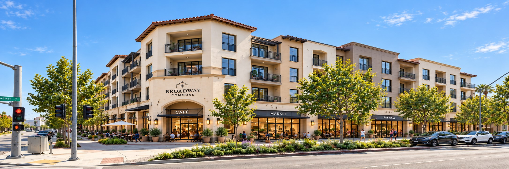
Project Overview
Town Center is a ground-up multifamily development underwriting case study evaluating the feasibility of a new mixed-use residential project.
The analysis incorporates development costs, construction timing, lease-up, stabilized operations, financing and exit valuation.
The underwriting also includes a detailed equity waterfall and partnership return analysis to evaluate investor-level economics.
Project Files
Review the complete underwriting package or download the Excel model.
Financial Analysis
Underwriting
Investment Summary
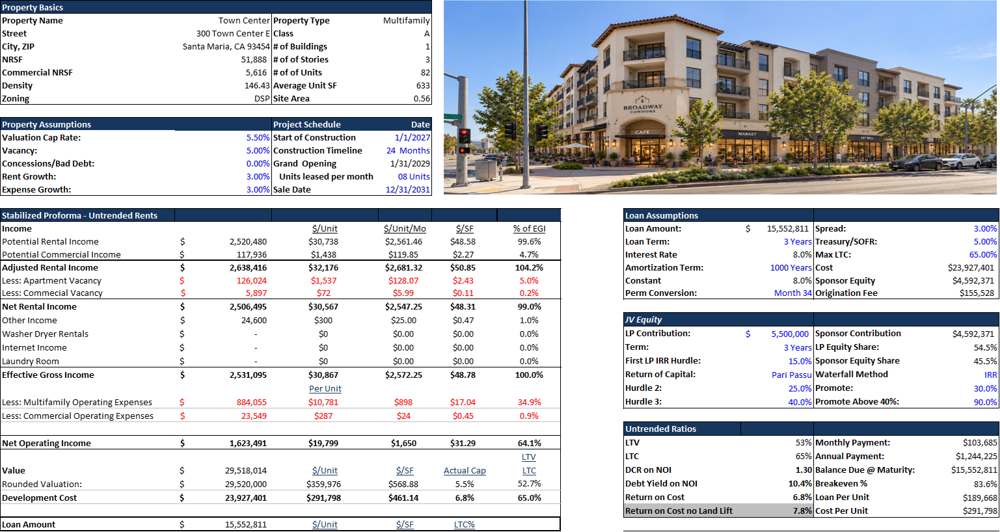
Assumptions
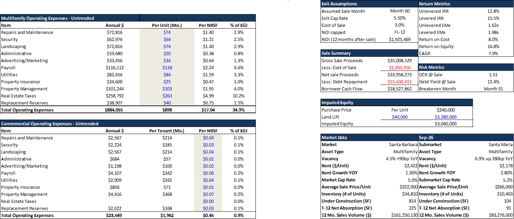
Yearly DCF
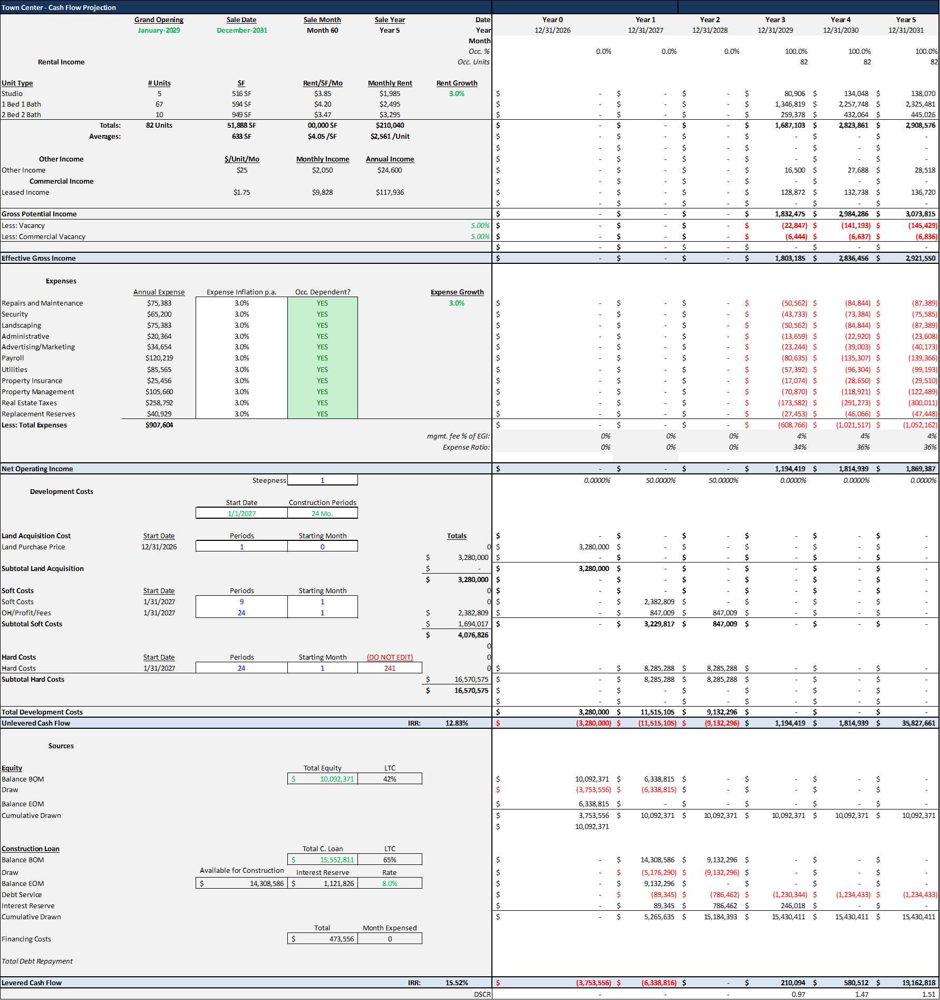
Equity Waterfall
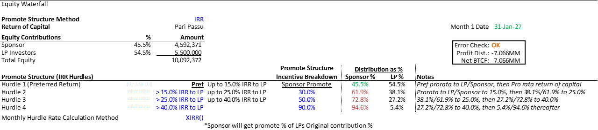
Partnership Returns
Multifamily Unit Mix
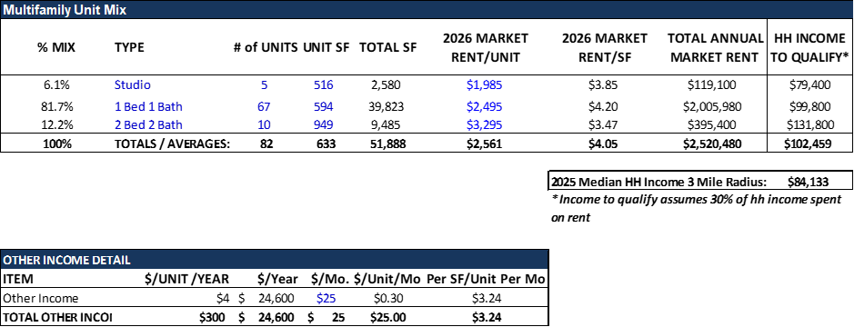
Retail Rent Roll
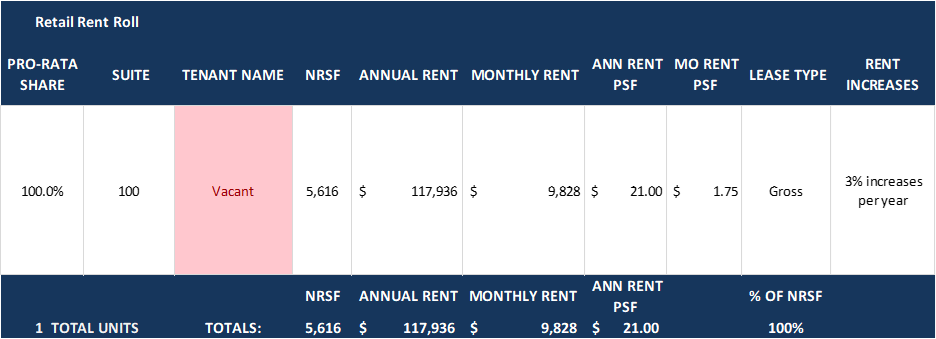
Untrended Pro Forma
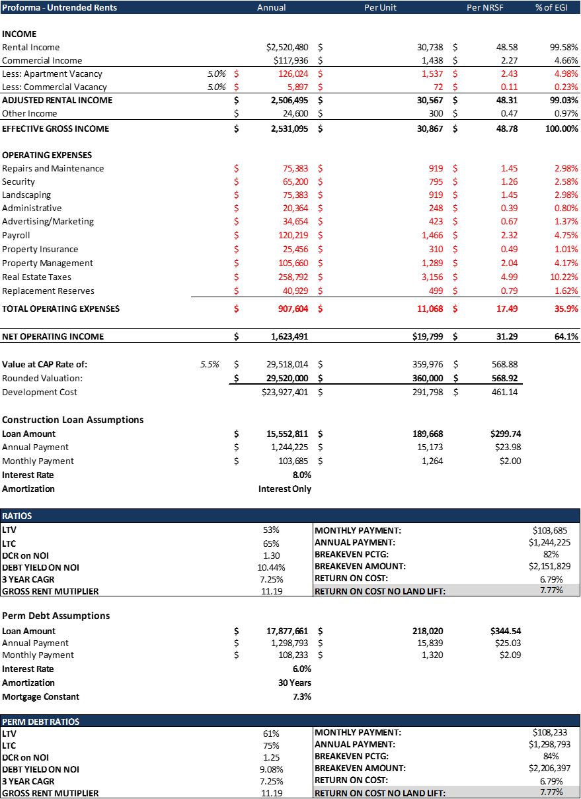
Trended Pro Forma
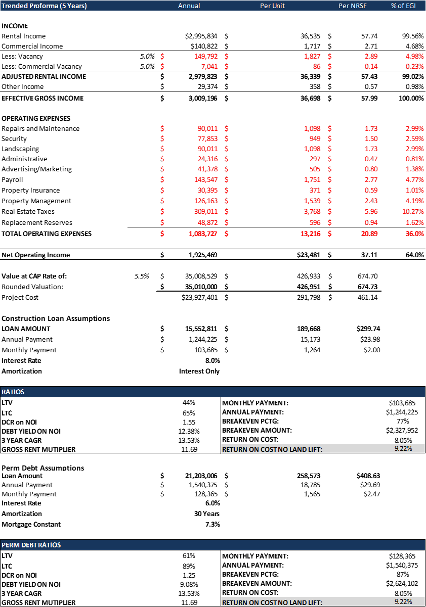
Development Costs
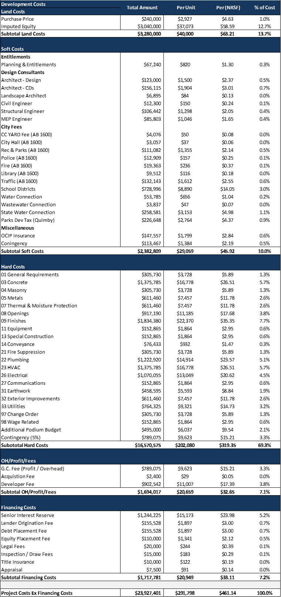
Sources and Uses
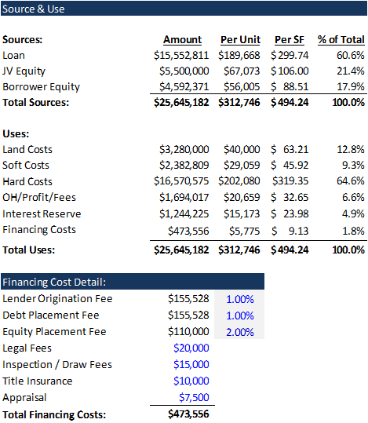
Absorption Schedule
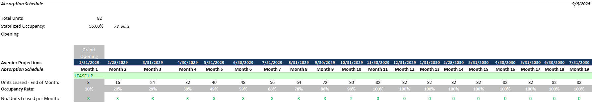
Rent Comparables
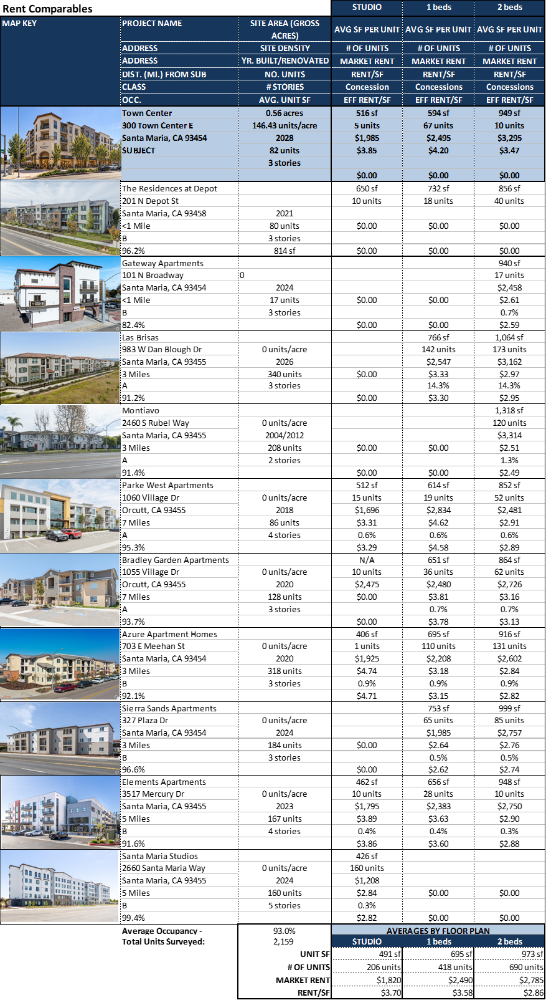